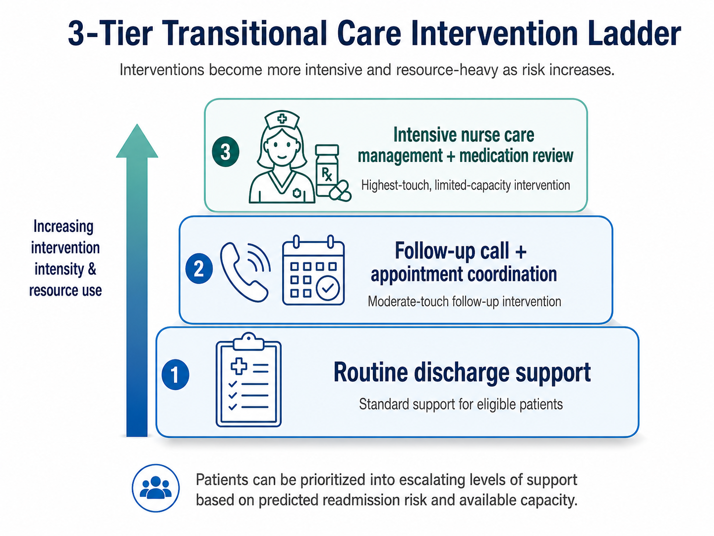
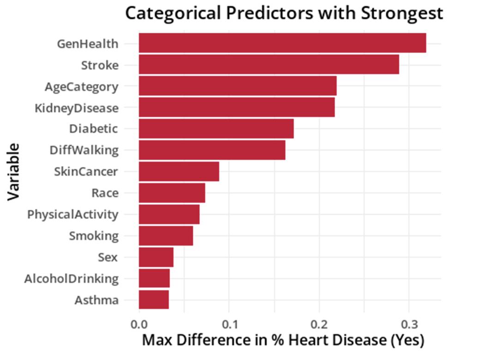
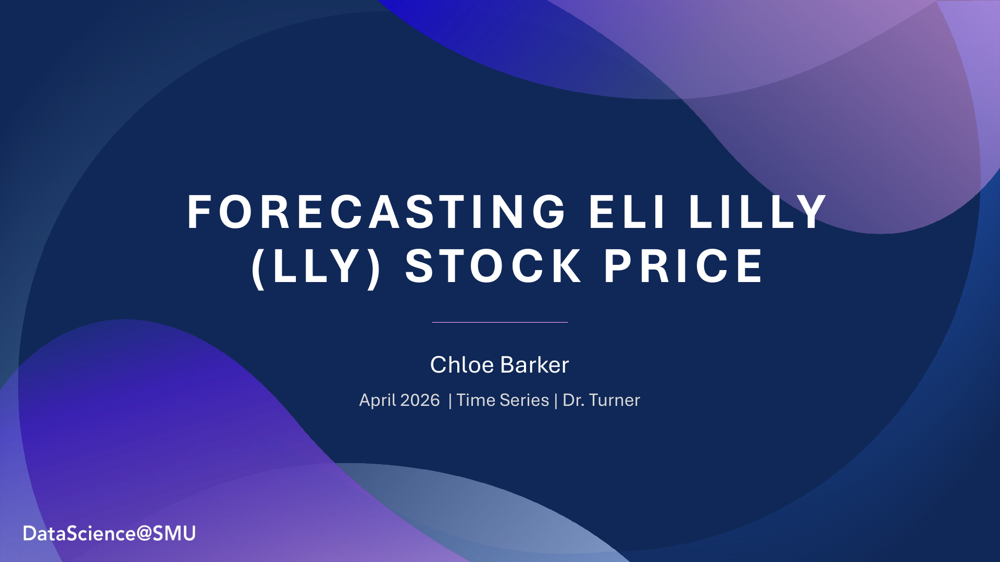
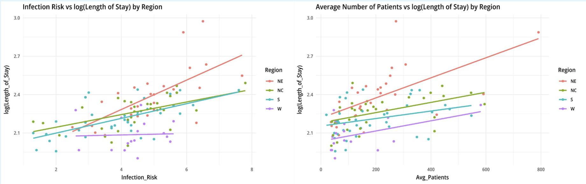
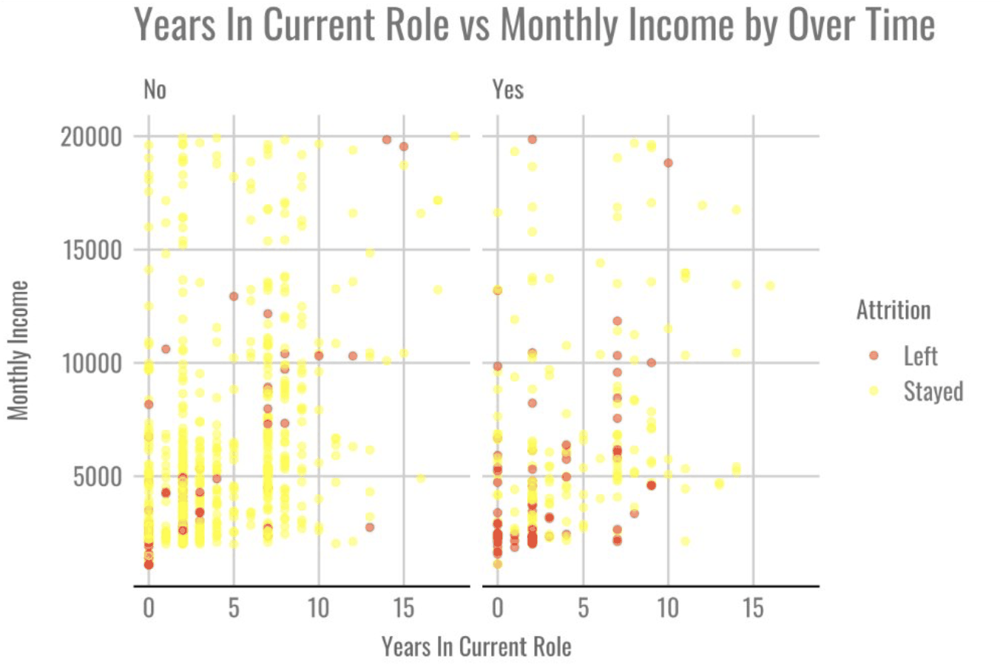
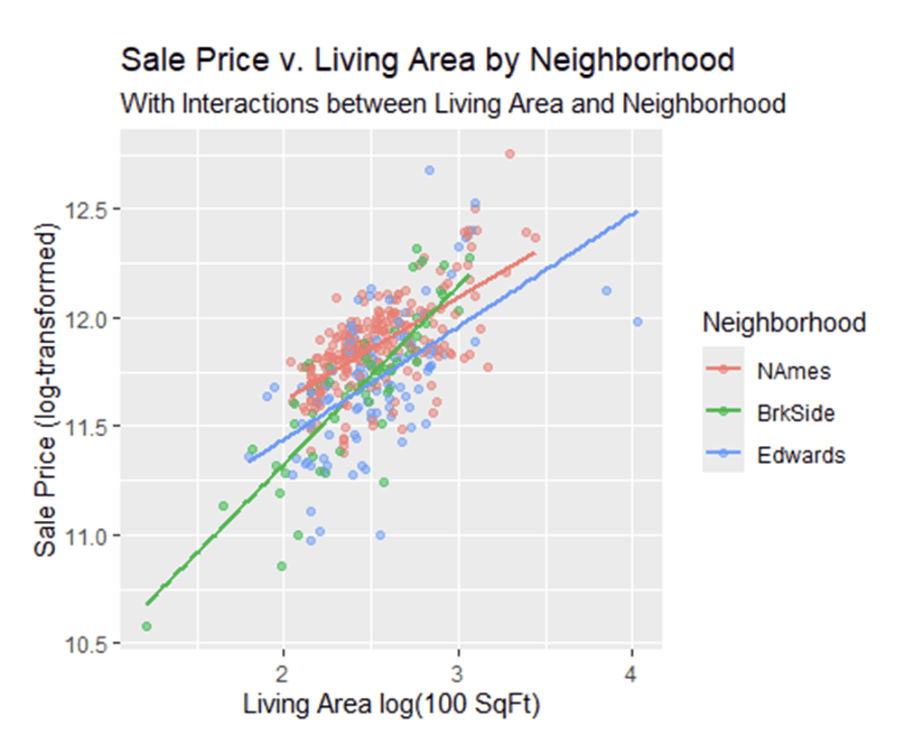
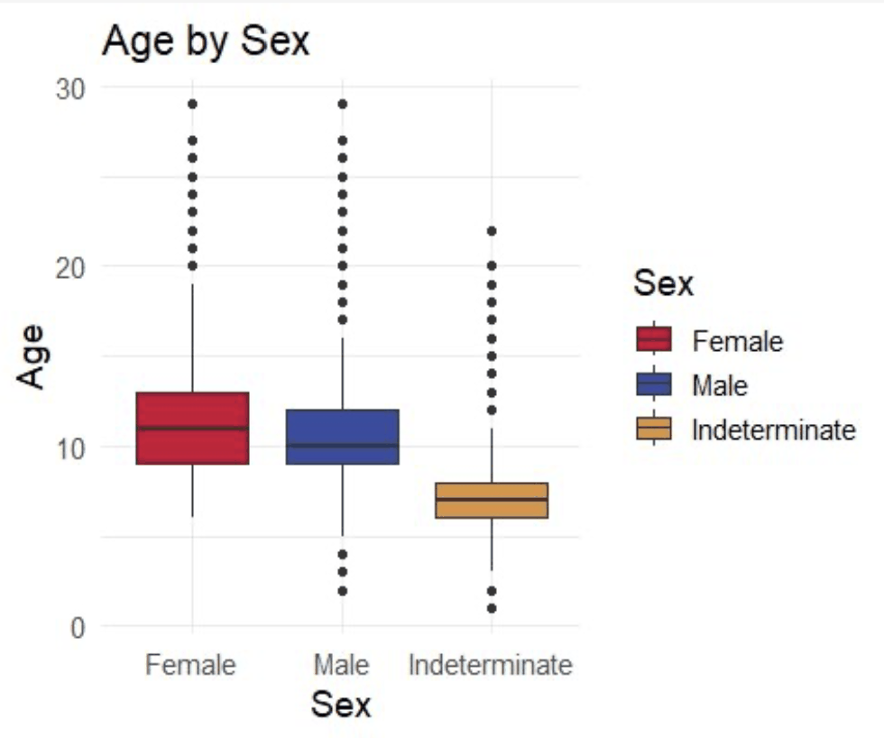

Seven applied modeling projects across healthcare, HR, real estate, finance, and operations. The common thread is choosing the model, threshold, and delivery format that fit the decision, not just the best headline metric: deployed triage workflows, cost-optimized thresholds, interpretable baselines, and horizon-specific forecasts.

Built and deployed a decision-support app for hospital care-management teams to prioritize diabetes discharges for routine, enhanced, or intensive follow-up. The system combines readmission-risk modeling, capacity planning, net-value analysis, and source-grounded CMS/AHRQ guidance through RAG.

Modeled heart-disease risk from CDC survey data on 300K+ respondents, comparing logistic regression, GLMNET-selected interactions, LDA, QDA, and kNN. The final model balanced discrimination with interpretability and showed how much signal a routinely collected survey can carry.

Forecasted Eli Lilly's stock price for a healthcare investment scenario requiring both short- and long-horizon views. Multiple time-series models were evaluated separately by forecast horizon, showing why a single model choice can hide the real decision trade-off.

Predicted hospital length of stay across 113 hospitals, comparing interpretable regression baselines with more complex specifications. The final recommendation favored accuracy only where the added complexity produced a defensible operational signal.

Built an employee attrition model for Frito-Lay and selected the decision threshold around turnover economics rather than overall accuracy. The result connects model sensitivity, replacement-cost exposure, and retention-action cost in one business recommendation.

Predicted home sale prices in Ames, Iowa two ways: first testing whether the price-per-square-foot relationship changes by neighborhood, then building a Kaggle-style model that explained about 87% of the variation in price.

Predicted crab age from physical measurements in a Kaggle-style regression setting, then built a small Shiny interface to make the model explorable beyond the static report.